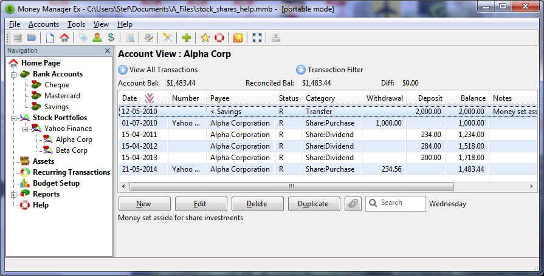

Les termes société et action signifient généralement la même chose mais selon l'utilisation de ces termes, cela pourrait signifier quelque chose de différent. Ici, nous utilisons le terme société pour signifier une entreprise, et action ou titre pour signifier une part du capital de l'entreprise. Généralement, nous achetons et vendons des actions de la société via un courtier en actions.
Débuter dans la gestion des titres est un processus en deux étapes.
Toute opération ultérieure comportant des mouvements d'actions est réalisée via la société dans la vue du portefeuille de titres.
Toute opération reliée à nos comptes normaux est faite dans la vue du compte de titres associé à la société.
Pour utiliser les titres dans MMEX, nous devons créer un compte de type Portefeuille de titres.
Le nom de ce compte sera généralement le nom du courtier en actions.
Dans notre exemple, nous avons sélectionné le courtier en actions appelé
Yahoo Finance
.
Ce compte va apparaître dans l'arbre du navigateur sous le nœud Portefeuille de titres. Si nous déplions le nœud Portefeuille de titre dans l'arbre du navigateur, nous allons voir notre compte Portefeuille de titres nouvellement créé.
Sélectionner notre nouveau compte Yahoo Finance
ouvre la vue Portefeuille
de titres : Yahoo Finance. Dans cette vue, nous pouvons maintenant ajouter les actions que nous possédons.
Nous parlons de sociétés pour les entreprises dont nous avons acheté des actions.
Si nous achetons des actions de deux sociétés auprès de notre courtier en actions
Yahoo Finance
, nous allons créer de nouvelles entrées dans
la vue Portefeuille de titres pour ces sociétés.
Les données initiales à fournir pour chaque société sont les suivantes
APCétant le code de l'action,
AXétant le code de la bourse permettant d'obtenir le cours actuel de l'action.

Ces données enregistrées, le compte de titres et le lien avec la société peut être configuré.
Les utilisations ultérieures de cette fenêtre nous permettent de mettre à jour le cours de l'action pour cette entreprise. Quand de nouvelles actions sont achetées, le nouveau prix va affecter toutes les actions.
Maintenant que nous avons créé l'entrée initiale de la société, nous devons ajouter une transaction à notre société pour créer les actions initiales. Les informations sur les actions initiales sont transférées dans notre nouvelle transaction de titres.
Ici nous devons ajouter des informations supplémentaires similaires à une transaction normale.

L'achat ou la vente d'actions est réalisée en sélectionnant la ligne de la société dans la vue Portefeuille de titres et en cliquant sur le bouton Ajouter opé.
Ici nous devons ajouter les informations sur les actions et choisir entre achat et vente via la section Détails de l'opération de l'opération boursière.
Notre compte Portefeuille de titres affiche maintenant un résumé des actions que nous possédons.
Les sociétés Alpha Corp et Beta Corp ont leurs comptes chez Yahoo Finance. Ici nous avons caché divers entêtes comme ils n'ont pas de sens dans cette vue.

Note : Le prix initial de l'action n'est pas affiché dans cette vue. C'est parce que le prix initial de l'action n'a pas de sens dans un résumé comme chaque achat se fait généralement à un prix différent.
Quand nous avons ajouté des actions à notre compte, nous pouvons afficher les opérations avec la vue des transactions boursières.

Un Compte de titres contient les transactions qui sont liées aux actions de cette société.
Initialement, nous mettons de l'argent de côté pour investir dans des actions. C'est réalisé en transférant de l'argent de nos comptes bancaires vers un compte de titres.
Au fur et à mesure que nous achetons des actions et que nous recevons des dividendes, nous pouvons désormais suivre notre investissement au fil du temps.
Dans une transaction, nous pouvons aussi utiliser le nom de la société comme tiers. Il est aussi conseillé de créer des catégories comme :
Liste des transactions dans le compte de titres pour notre société :
En utilisant le compte de titres, nous pouvons ajouter des transactions ordinaires à notre compte de titres.